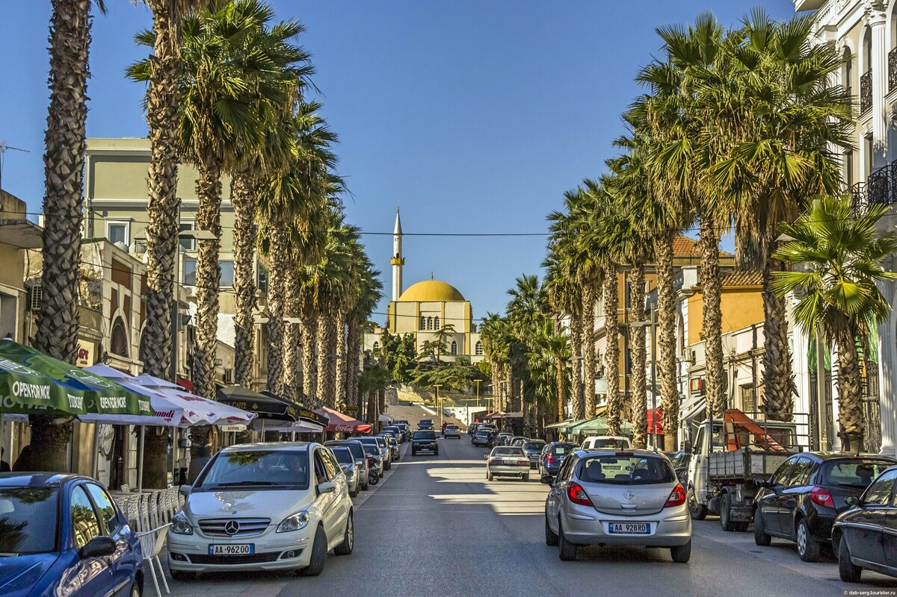

Албания
Ещё совсем недавно про эту маленькую страну известно было очень мало, она была незаслуженно изолирована от мира. Прошла муки трансформации, находясь в постоянной боеготовности. Завеса секретности снята. Местоположение Албании записано во многих туристических прайсах: Балканский полуостров, его западная часть. Сербия, Италия, Черногория, Северная Македония, Греция с разных сторон соседствуют с ней границами. В мировой классификации площадь (28 748 км2), заняла 139 место, население к 2021 году исчислялось в количестве 2 829 741 человек. Стоит отметить, что каждому четвёртому жителю, менее 20 лет. Территория имеет горный рельеф. Цепи гор расположились с севера на юг. Плодородные долины в прибрежных районах. Ландшафт страны, климат, природные ресурсы составляют достопримечательность государства. Горами и холмами занята три четверти всей территории, малая часть представлена прибрежными и болотистыми равнинами. Благоприятные погодные условия местности обеспечивают разнообразие флоры и фауны. В Албании более 250 разнообразного происхождения озер. Древнейшим озером в мире считают Охрид. По территории протекает 152 реки. Один морской парк, 14 национальных парков, 3 объекта всемирного наследия и много территорий, имеющие различные степени охраны. Албания прекрасна, с этим трудно спорить. Но транспорт её развивается и желает быть лучше. Железные дороги колоритны. Списанные вагоны были закуплены в Италии. Теперь они ездят по албанским путям. Стоит учесть, что местность Албании составляют горы на 70%. Узкие дороги с серпантином и невозможность иметь большое количество железнодорожных путей, этот вид транспорта доведён почти до мёртвого состояния. Закрыт железнодорожный вокзал в столице с 2013 года. Перенесён в город Кашар за десять километров от центра.Общая информация
| Площадь территории: | 28 748 км 2 | |||
|---|---|---|---|---|
| Численность населения: | 2 793 592 чел. | |||
| Рейтинг туристической привлекательности: | 8,12% | |||
| Крупные города: | Тирана, Эльбасан, Влёра, Камза, Дуррес | |||
| Общее количество прибывших туристов(за год): | 123 000 чел. | |||
| Доход от туризма (за год): | 682 000 млн. длр. | |||
| Объекты ЮНЕСКО: | Бутринти, Берат, Охридское озеро, Буковые леса Карпат | |||
